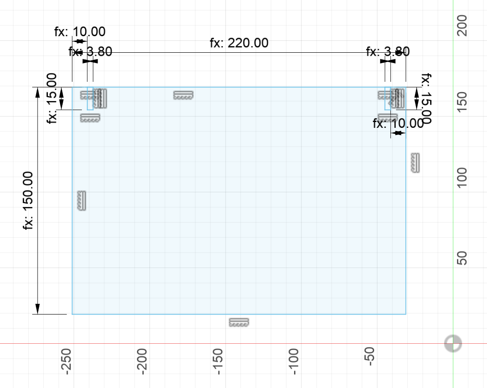
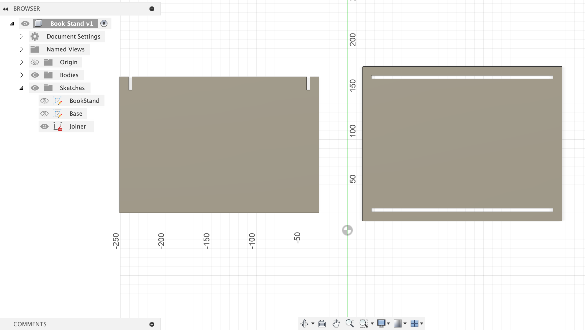

<br>
#### Week 2: 2D Design and Fabrication
This week I explored Fusion 360 and Inkscape to create two-dimensional models and designs. I found this to be an incredibly rewarding challenge, as I have experience in visual and digital art, but not modeling. It has taken me a moment to get used to the mechanics involved with computer modeling, but as I've gotten the hang of it I have found it to be very fun and useful.
For my first foray into modeling, I devised a simple press-fit construction piece for tinkering. The base shape is a circle, and there are eight notches around the circumference. The circles can join at these notches, allowing for three-dimensional shapes to be created. The hole in the middle is the same diameter as a standard wooden pencil; this allows pencils to be utilized as a compatible building material. I would like to expand on this project by creating other shapes and by created a joining piece, so that two pieces can be connected and lay in the same plane.
<img src="pressfit_1.png"width="200px"> <img src="pressfit_2.png"width="355px">
Once I found myself more comfortable with the process of modeling, I tried to imagine something I could build for myself that was a) a bit more original and b) personally interesting or useful to me. I came up with the idea of creating a bookstand that could double as a reading light, as we also explored the basics of circuitry this week. For the purpose of this assignment, I just focused on the modeling. Below is my current progress in Fusion 360 as of September 21, 2023. (A bad cold and and a freak accident with some boiling tea at Black Sheep Bagel set me behind where I would have liked to have been with this project, but I have found it's become a great exercise in prioritizing design tasks.) My hope with this project is the prototype it with cardboard and work towards a more complete wooden or acrylic final product. I would also love to use Inkscape to design a pattern on the faces of the stand to create visual interest and increase its potential as a lamp.
 